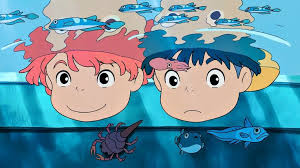

☆Gênero: Infantil/ Comédia/ Ação
☆lançamento: 30/07/2010
☆diretor(a): Hayao Miyazaki
☆Studio: studio ghibli
☆classificação indicativa: Livre
☆Duração: 1h 55mn
avaliação:★★★★★ (5,0)
Sinopse
O garoto Sousuke encontra um peixinho dourado preso em uma garrafa e decide libertá-lo, sem saber que se trata da deusa do mar Ponyo. Filha de um poderoso mago, ela se comove com a atitude do menino e usa a magia do pai para se transformar em humana. Dessa forma, acredita poder fortalecer a amizade com Sousuke. Porém, a substância de sua poção mágica pode colocar em risco o vilarejo onde mora o menino.